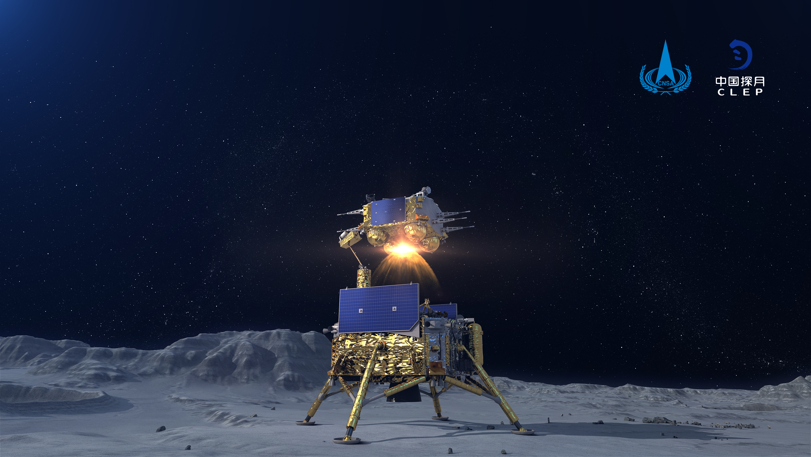
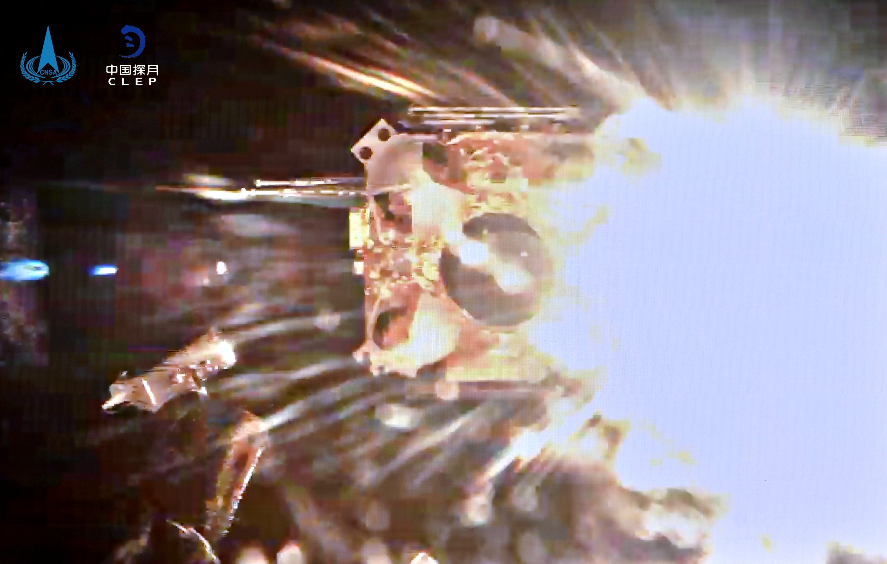

12月3日23时10分，嫦娥五号上升器3000N发动机工作约6分钟，成功将携带样品的上升器送入到预定环月轨道。这是我国首次实现地外天体起飞。
与地面起飞不同，嫦娥五号上升器月面起飞不具备成熟的发射塔架系统，着陆器相当于上升器的“临时塔架”，上升器起飞存在起飞初始基准与起飞平台姿态不确定、发动机羽流导流空间受限、地月环境差异等问题；另外由于月球上没有导航星座，上升器起飞后，需在地面测控辅助下，借助自身携带的特殊敏感器实现自主定位、定姿。
点火起飞前，着上组合体实现月面国旗展开以及上升器、着陆器的解锁分离。此次国旗展开是我国在月球表面首次实现国旗的“独立展示”。点火起飞后，上升器经历垂直上升、姿态调整和轨道射入三个阶段，进入预定环月飞行轨道。随后，上升器将与环月等待的轨返组合体交会对接，将月球样品转移到返回器，后者将等待合适的月地入射窗口，做好返回地球的准备。
 